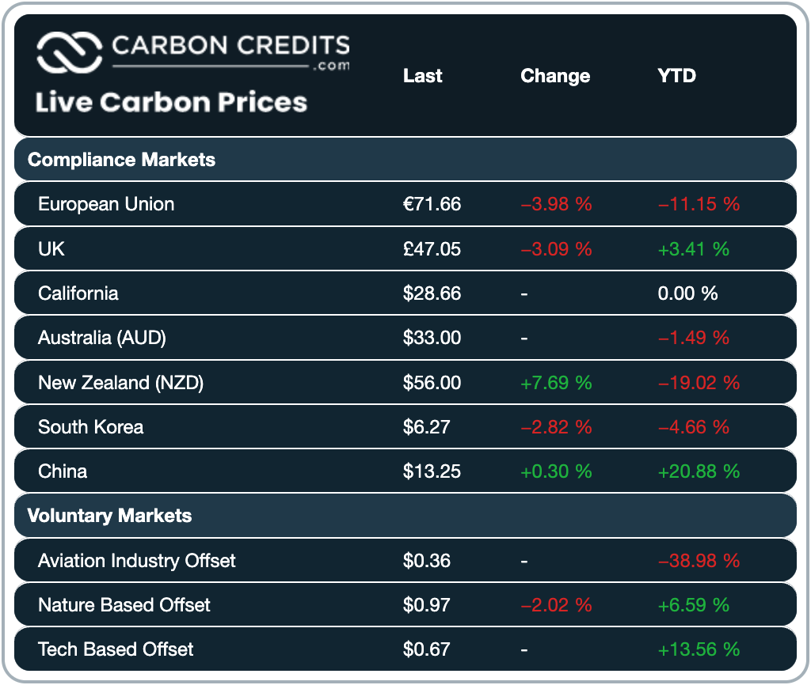
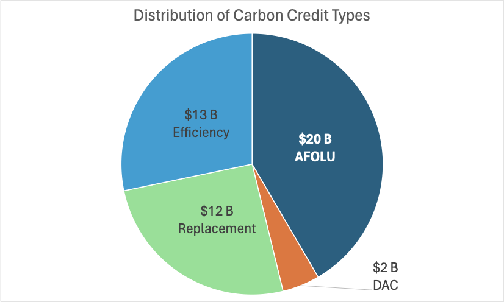

Religious dogma among environmentalists calls for preserving an idyllic concept of the natural world. This set of beliefs actually distorts the truth and threatens the global economy. It’s time to call a spade a spade.
For today’s example, let’s look at “voluntary carbon markets.” This example is prompted by the publication of a policy statement (and accompanying fact sheet ) by senior members of the Executive Branch, including the Secretaries of Treasury, Agriculture, and Energy. In essence, this policy aims at the following:
[S]takeholders must be certain that one credit truly represents one tonne of carbon dioxide (or its equivalent) reduced or removed from the atmosphere, beyond what would have otherwise occurred.
The rationale for this attention is apparent: In the past few years, carbon credits have become a big business, with a global market of nearly a trillion dollars 1 per year! Most of this cash flow is determined by various regulatory frameworks, but the voluntary market is still a multibillion-dollar market 2 . As with any voluntary market, there is a buyer, a seller, and an agreed-upon price. Buyers pay to compensate for, or “offset,” activities that result in emissions, while sellers have devised ways to “reduce or remove” harmful emissions “beyond what would have otherwise occurred.” I highlight these phrases in quotation marks because they present easy-to-distort features of carbon accounting.
Specifically, sellers can monetize a future reduction in emissions from a baseline using an extortion scheme that I’ve called “a reverse carbon ransom” (i.e., “Pay us, or we’ll release the carbon.”) At the same time, buyers are allowed to purchase indulgences for their sins against the environment, much like wealthy Catholics wishing to enter heaven 3 , with similar effectiveness in the earthly realm.
So, why blame environmentalism? I followed “voluntary offsets” back to their origin. Many of these offsets are priced based on AFOLU, IPCC jargon for Agriculture, Forestry, and Other Land Use, where the fundamental mechanism for adjusting atmospheric carbon is photosynthesis. Most AFOLU offsets lead to “afforestation” or “reforestation,” which are counted as a net removal of carbon. However, these credits are valued today based on the future lifetime of the tree rather than the annual emissions balanced by the carbon captured by trees. The future is uncertain, and there’s no assurance that every tree planted will live a whole life. If they don’t reach their life expectancy, the removal will be less than the contracted amount. Because trees can live for decades, this accounting trick leads to enormous economic leverage, allowing customers to pay for today’s emissions with removals in the future. Carbon accountants should study financial accountants’ treatment of “discount rates” and “interest rates” to understand why this is bad practice.
It’s even more pernicious than that: Afforestation (the introduction of forests where none have previously existed) presumes the durability of planted trees with almost certain duplicity. There is ample evidence to the contrary. Don’t you think forests would establish themselves naturally under favorable conditions? So, if afforestation credits are granted based on a tree's lifespan under favorable conditions, but most of them die in a couple of years, then they are overvalued several times over.
In both cases, the sellers of these AFOLU offsets should be required to buy insurance and monitor their assertions of value. But neither buyers nor sellers of these offsets really care: Sellers get revenue today for future promises, and buyers can continue their sinful ways and reach heaven nonetheless. It’s a corrupt market.
And it gets worse: Carbon accounting for the inverse of afforestation, “deforestation,” assumes that the trees are burned to completion, returning their carbon to the atmosphere instantaneously. This is simple accounting fraud: wood decays slowly and is a durable commodity that can last hundreds, or even thousands, of years if treated properly. And, in many cases, the avoidance of deforestation (compared to a baseline of clearcutting the forest) leads to an annual, recurring ransom payment!
Further, replacement offsets often relate to using “biofuels,” which are counted as reducing carbon emissions because of the geologic carbon they are presumed to replace. But because biofuels are burned, they don’t remove any atmospheric carbon. From an Econ 101 perspective, adding biofuels increases fuel supply, predictably depressing the price and increasing consumption, at least to the extent OPEC allows. My point is that nobody knows the proper baseline, but the benefit to the atmosphere will likely be less than what it is contracted for.
The basic issue that connects these accounting tricks back to environmentalism is that the absolute value of the activity is binned into the “land use, land use change, and forestry” (LULUCF) bucket. LULUCF is based on complex models that simulate the responses of a highly variable biological system, not ones based on well-established Laws of Physics and Chemistry. Because of the complexity and unknowns, all LULUCF models necessarily reinforce the preconceived ideas of both the modelers and the academic community because they are difficult to verify experimentally. But, the community’s expectation (and, frankly, mine when I began this journey) is that forests and natural ecosystems are intrinsically better than those created and managed by humans, so that’s what the models predict. However,
This is a statement of belief, not Science. The available primary data, limited though it may be, contradicts the conclusions.
As a scientist, failure to reconcile complex bottom-up models with primary measurements is malpractice, pure and simple.
We can quantify the financial consequences of these assumptions. Not only are these carbon accounting practices deceptive, but by connecting carbon to financial markets, the resulting accounting fraud adds financial corruption to the mix and multiplies its damage by funding non-productive economic activities. Here’s what the current market price of carbon credits looks like:

Note the significant differences based on jurisdiction and use and between compulsory versus voluntary payments. Arbitrageurs, if enabled, would have a feast! And they should be enabled since it’s the same damned atmosphere. If this scheme will work at all, there should be a global market price on a tonne of carbon, like a global market price on a barrel of oil.
Now, compare these values to the estimated “social” cost of carbon dioxide ($185 per ton 4 , another sketchy number derived from biased models) or to the Congressionally suggested value of carbon emissions (~$60 per ton). The “tragedy of the“commons” impact remains” even at the highest prices. What companies volunteer to pay for an offset is also much less than what they might be forced to pay under regulation. It shouldn’t be accepted that established businesses embrace voluntary carbon markets as a solution! Whether these business leaders appreciate the actual cost of emissions, offsets provide a way of achieving “economic net zero” inexpensively without putting a dent in “engineering net zero,” the only measurement that matters.
To estimate the amount of money involved, I downloaded publicly available lists of active projects that have generated carbon credits from the top four sellers: Verra, Gold Standard, Climate Action Reserve (CAR), and American Carbon Registry (ACR). Each registry has its classification system, so condensed them into four categories: AFOLU, Direct Air Capture (DAC), Replacement, and Efficiency. Based on the carbon credits sold so far, here’s how much money has changed hands:

If all of these contracts were completed, nearly two gigatonnes of carbon—equivalent to 0.25 ppm—should have disappeared from the atmosphere. Yet the primary data don’t lie: the acceleration continues.
So, emitters have spent $20B on planting trees, which could be worthless, $12B on substituting biofuels for geologic carbon, which could be worth much less than that, and $13B on efficiency. The efficiency number may seem worthwhile until you study Jevons’ Paradox, which shows that efficiency improvements are ineffective: They lead to proportional increases in consumption. We’re left with 5% or so of “direct air capture” credits, and we’d better hope removals are irreversible. I fear that they are not.
Granted, the Catholic Church denies that such a quid pro quo ever existed, but financial donations to the church certainly led to favorable treatment by the clergy.